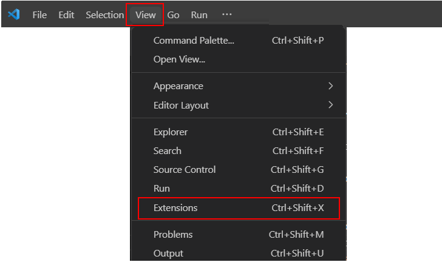
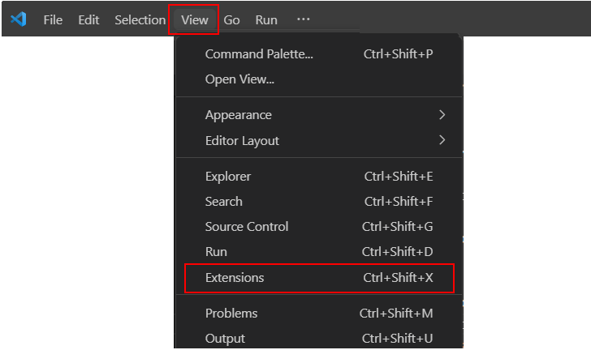
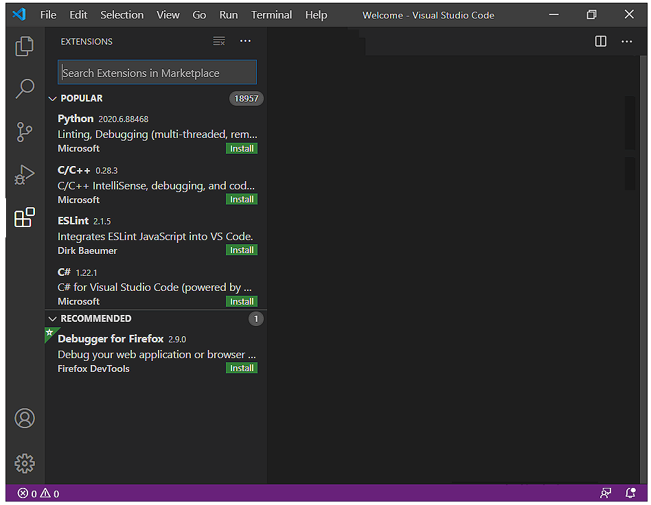
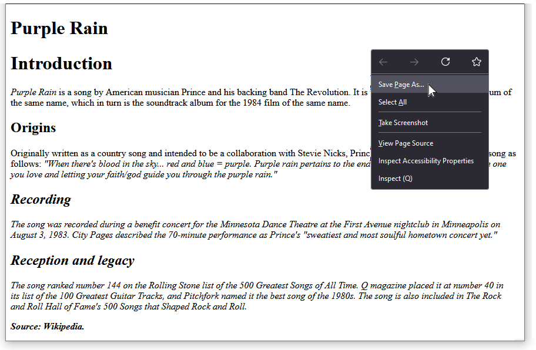
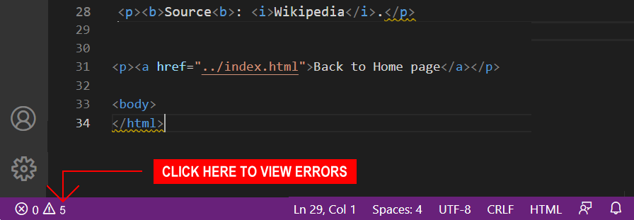
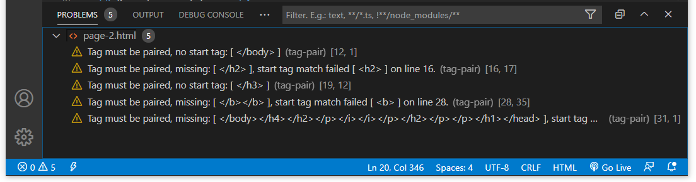

Learning Goals
At the end of this Tutorial you will be able to:
- Understand the basic concept of marking-up text content.
- Install the HTMLHint extension in your copy of VS Code
- Use HTMLHint to identify and correct mark-up errors in the HTML code of a web page.
About HTML 'mark-up' in web pages
Adding HTML tags to the text in a web page is called marking-up. The term has a long history that goes back to the early days of printing.
“The noun markup is derived from the traditional publishing practice called ‘marking up’ a manuscript, which involves adding handwritten annotations in the form of conventional symbolic printer’s instructions – in the margins and the text of a paper or a printed manuscript.
“For centuries, this task was done primarily by skilled typographers who marked up text to indicate what typeface, style, and size should be applied to each part, and then passed the manuscript to others for typesetting by hand or machine.
“The markup was also commonly applied by editors, proofreaders, publishers, and graphic designers, and indeed by document authors, all of whom might also mark other things, such as corrections, changes, etc.”
Source: Wikipedia
Some examples of mark-up symbols from the print industry are shown below.

Installing the HTMLHint Extension
Microsoft Visual Studio Code offers an extension named HTMLHint that will help quickly identify and correct any errors in your HTML mark-up tags.
Follow these steps to install HTMLHint in your copy of VS Code.
- At the bottom-left of the VS Code screen, click the Gears icon and then click the Extensions command.
 Alternatively, you can click the View menu at the top of the screen, and then click the Extensions command.

Alternatively, you can click the View menu at the top of the screen, and then click the Extensions command.
 - VS Code opens a new window named Extensions at the left of your screen. Typically, it will show a list of currently popular Extensions. At the top of the list you can see a search box. 
- In the Extensions search box, type HTMLHint.

- On the list of extensions found, click HTMLHint.

- The top part of your Extensions window should now look similar to that below.
 Click the blue Install button to install the HTMLHint extension in your VS Code app.
Click the blue Install button to install the HTMLHint extension in your VS Code app. - The top part of your Extensions window should now look as shown below.

- To close the HTMLHint Extensions window, click the close (X) icon at the top.

- To close the Extensions search box, click the large Extensions icon in the Activity Bar at the left of the VS Code screen.

Downloading a second sample web page
In this section, you will create a second sample web page named page-2.html based on a page you download from the Internet. Here are the steps:
- Click on the following web page to open it in a new tab of your web browser: page-2.html
- Right-click anywhere on the web page and choose the Save Page As... command from the context menu displayed. 
- Save this HTML file in the 📁 exercises sub-folder of your 📁 websites folder with the following name:
page-2.html
 In the Save as type box, ensure you choose the option Web Page, HTML Only.
In the Save as type box, ensure you choose the option Web Page, HTML Only.

DO NOT name your web page with an upper-case ‘P’ as in Page-2.html.
And DO NOT use some other combination of upper and lower-case letters, such as PAGE-2.HTML or page-2.HTML.
Also, DO NOT enter any blank spaces in the name of your file: type page-2.html NOT page - 2.html or page -3.html.
When finished, your folder and file structure should look as shown below.

Correcting HTML mark-up errors in your downloaded web page
Your downloaded page-2.html web page already contains HTML tags. But with some deliberate errors!
Your task is to correct these with the help of the HTMLHint extension.
Note the following:
- In the <head> of every web page there should be just one title and one description.
- In the <body> of every web page there should be just one <h1> tag.
- Every time you enter an opening tag (for example, <h2>), you must also follow it with a closing tag (in this example, </h2>).
- Open the page-2.html file in VS Code and display it in your web browser.
- In VS Code, look at the coloured bar across the bottom of the screen.  You can see a warning that your web page contains five errors.
- Click on the number 5 to display the list of errors in the web page. You can also see the line number on which each error occurs. 
- Correct the errors and, when finished, resave your page-2.html web page.
Display the page in your web browser. It should now look as shown below.

✅ You have now finished working with your second sample web page.
Updating your home page
Your next task is to add a hyperlink on your home page to your second sample web page.
- Open your index.html file in your ‘main’ 📁 websites folder in VS Code.
- Copy-and-paste the following new line.
<p><a href="exercises/page-2.html">Purple Rain</a></p>
- Save your index.html file.
In your web browser, your updated home page should look similar to that below. Click the hyperlink to verify it works correctly.

✅ You have now finished updating your website home web page.
Uploading your web pages to GitHub
Your final task is to upload your three web pages to your account on GitHub.
- Open a new tab in your web browser and go to GitHub.com. If you are not already signed in to your GitHub account, sign in now.

- On your GitHub home page, click the name of the repository (‘repo’) that holds your web pages. Its name will look as follows, where username is your chosen username on GitHub.
username.github.io

- On the next GitHub screen displayed, near the right of the screen, you can see a button named Add file. Click on it.

- From the dropdown list displayed, choose the option Upload files.

- In File Explorer (Windows) or Finder (Apple Mac), drag-and-drop your index.html file and your 📁 exercises sub-folder to upload them to your repository on GitHub.
 Note: Because your upload includes a folder and not just files, you must use the drag-and-drop method rather than the file select method.
Note: Because your upload includes a folder and not just files, you must use the drag-and-drop method rather than the file select method. - Scroll down to the bottom of the GitHub screen, and accept or edit the short message (Add files via upload) in the Commit changes box.
- Finally, click the green Commit changes button to upload your entire exercises sub-folder and all the files it contains.

Your web pages are now published on GitHub at web addresses similar to the following, where username is the username you have chosen for your GitHub account:
https://username.github.io/index.html
– or simply –
https://username.github.io
https://username.github.io/exercises/page-1.html
https://username.github.io/exercises/page-2.html
It may take a few minutes for your uploaded files to appear on GitHub.